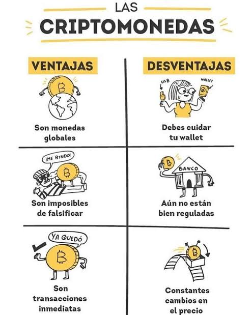

Bitcoin tiene diferentes ventajas que lo han convertido
en una de las criptomonedas más conocidas del mundo.
Entre sus principales beneficios se encuentran:
Descentralización: No depende de un banco central
ni de una sola institución que controle todas las operaciones.
Transferencias internacionales: Permite enviar
bitcoins a personas de diferentes países mediante Internet.
Disponibilidad: Su red funciona las 24 horas
del día y todos los días del año.
Transparencia: Las transacciones quedan registradas
en una cadena de bloques que puede consultarse públicamente.
Cantidad limitada: Su cantidad máxima está
establecida en 21 millones de bitcoins.

Ventajas de la tecnología Bitcoin
DESVENTAJAS DE BITCOIN
Aunque Bitcoin ofrece diferentes beneficios, también
presenta riesgos y dificultades que deben conocerse
antes de utilizarlo.
Volatilidad: Su precio puede subir o bajar
considerablemente en poco tiempo.
Riesgos de seguridad: Si una persona pierde
el acceso a su billetera digital o sus claves,
puede perder el acceso a sus bitcoins.
Uso limitado: No todos los establecimientos
aceptan Bitcoin como forma de pago.
Consumo de energía: La minería requiere
equipos especializados y puede consumir grandes
cantidades de electricidad.
Dificultad para principiantes: Comprender
su funcionamiento y utilizarlo de forma segura
puede resultar complicado al principio.
Algunos riesgos y dificultades de Bitcoin
CONCLUSIÓN
Bitcoin representa un avance importante en la tecnología
y en la forma de realizar transferencias digitales.
Desde su creación en 2009, ha demostrado que es posible
utilizar una red descentralizada para registrar y verificar
operaciones sin depender de una autoridad central.
A lo largo de este proyecto conocimos su origen,
funcionamiento, crecimiento, ventajas y desventajas.
También aprendimos que, aunque ofrece nuevas posibilidades
para la economía digital, presenta riesgos como los cambios
en su precio y los problemas relacionados con la seguridad.
En conclusión, Bitcoin es una tecnología que ha influido
en el desarrollo de las criptomonedas y ha cambiado la
manera en que muchas personas entienden el dinero digital.
Por eso es importante conocer cómo funciona y analizar
sus beneficios y riesgos antes de utilizarlo.